PassKeeper
基于星云链的去中心化密码管理工具。
-
简介
结合星云链去中心化的特点与Chrome Extension适合PC环境的特点，通过对称加密将密码信息存储在星云链， 而密钥文件本地生成不上传，有效保障用户密码信息的安全。
-
项目地址
PassKeeper
-
功能特点
-
一键填写网页表单
密码上传后，在登陆页面右键打开菜单点击
填写密码时可实时获取链上保存的加密密码，并解密直接填入表单。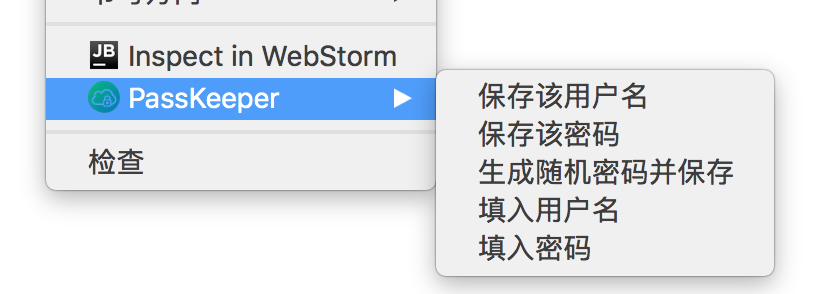 -
加密并上传密码信息
使用AES256对账号和密码进行加密并上传，密钥文件本地生成不上传。
-
一键导入本地密码
一键导入Chrome本地密码
-
查询密码信息
输入搜索关键词即可查询密码信息。
-
国际化支持
目前支持简体中文与英文
-
-
使用说明
-
下载
点击下载链接
-
安装
如图进入Chrome浏览器的拓展程序页面。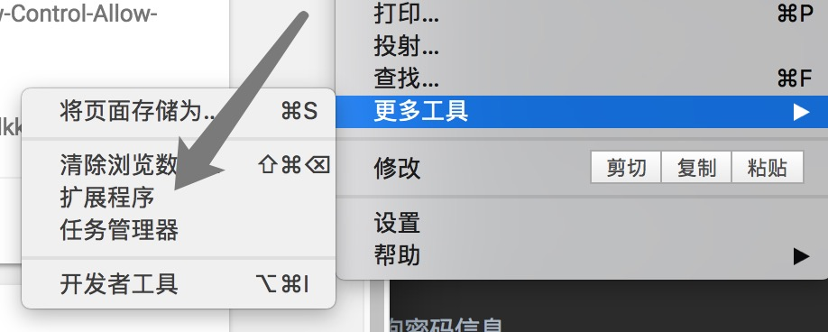 将刚刚下载的
PassKeeper.crx拖入该网页并安装。当浏览器右上角出现
 即说明安装成功。
即说明安装成功。 -
注册
默认用户已安装 NasExtWallet Extension 并 拥有钱包地址。
直接点击图标打开如图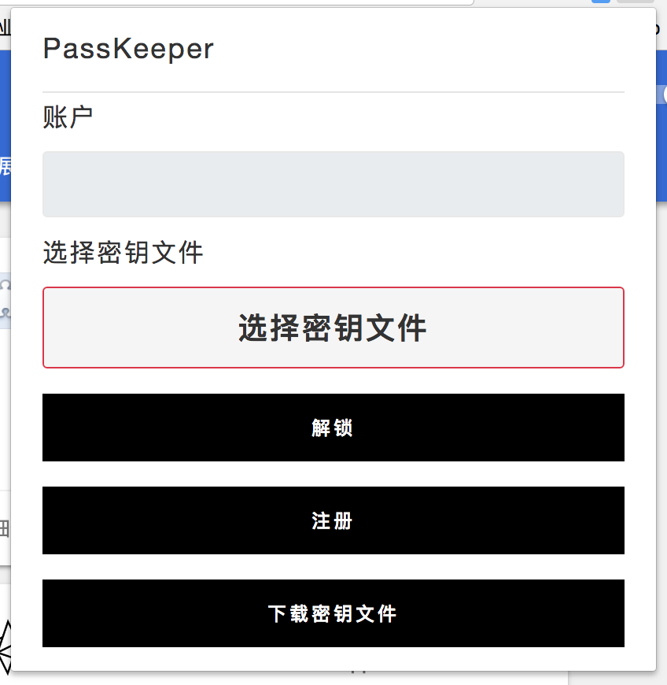 此时因为没有页面加载content.js，所以无法使用。需要用户随便打开一个网页，并加载完成后，如下图所示，显示钱包地址才可正常使用。不可抗拒因素限制，无法仅通过后台脚本与NasExtWallet进行交互 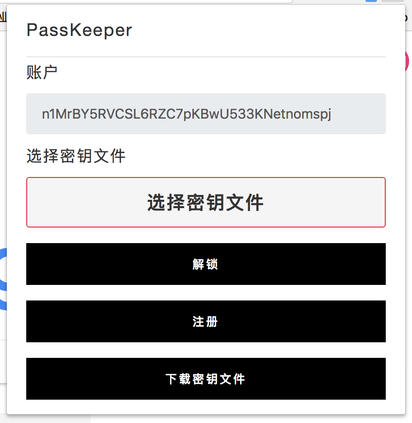
点击
下载密钥文件按钮，即可下载您的密钥文件，此密钥文件用以注册、解锁、加密、解密，丢失，不可找回！下载完成后，点击
选择密钥文件按钮，在弹出的窗口中选择刚刚下载的key.k，点击注册按钮，在弹出的NAS支付窗口中完成支付，即可完成注册. -
解锁
注册完成后，重新打开应用窗口，点击
选择密钥文件并选择刚刚注册使用的key.k，如图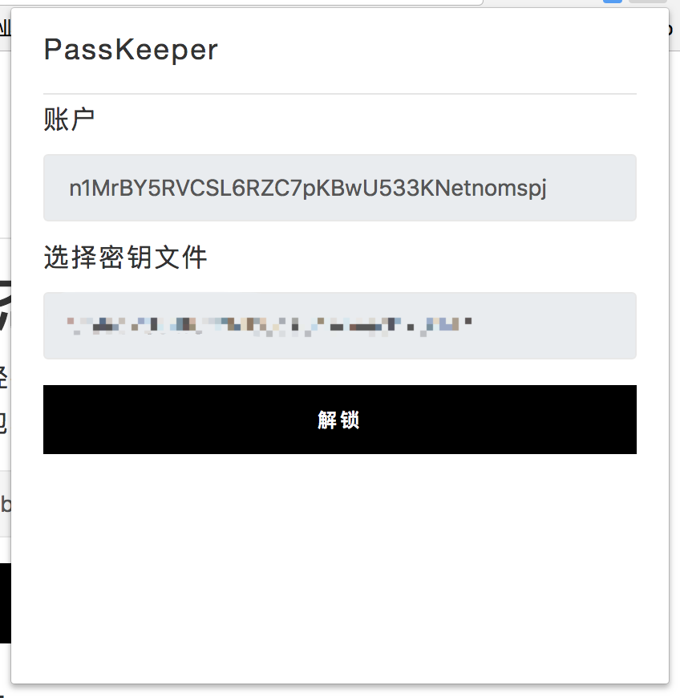，32位值为密钥文件的md5值。 点击解锁按钮，即可完成解锁。如图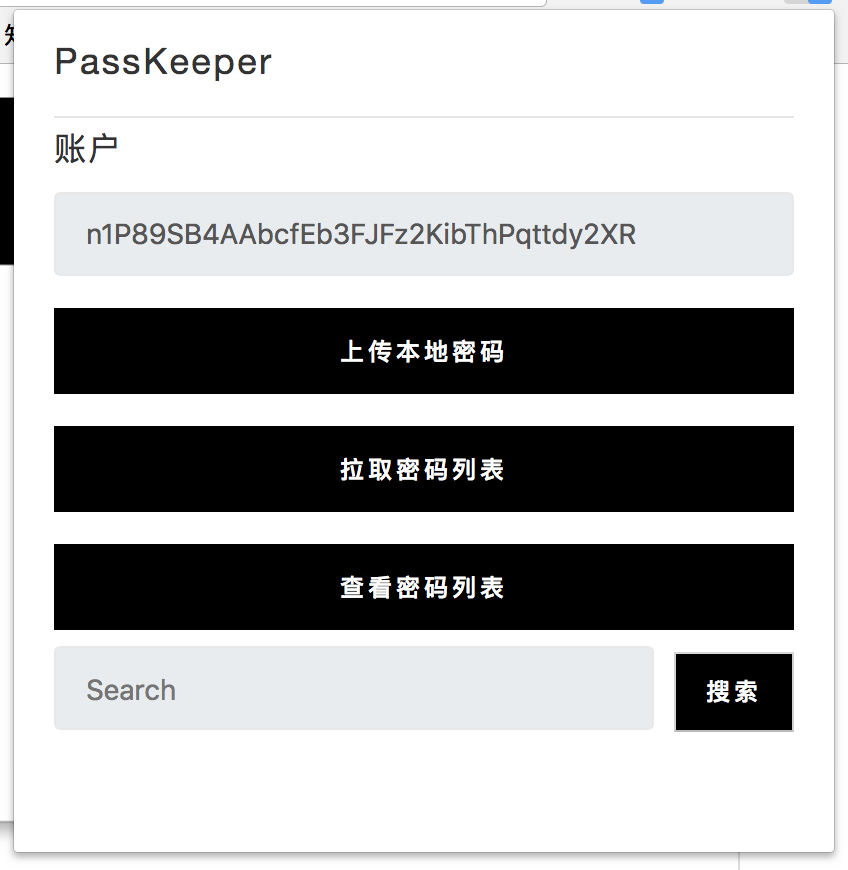 每次解锁的时间为5分钟。 -
保存并上传密码
打开任一网站的注册或登陆页面，在
用户名输出框中填写用户名并右键，在展开的菜单中点击保存用户名，如图 在密码处填写完成您的密码，点击保存密码或直接点击生成随机密码并保存，即可保存密码.此时可看到图标变化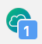此处的
1即表明有一个本地密码等待上传。重新点击应用图标，如果发现页面为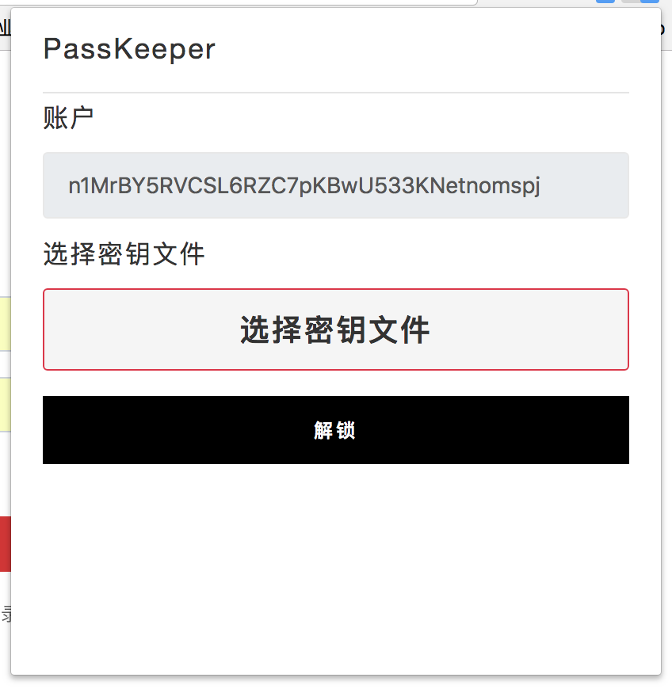即说明解锁时间已到，需要重新解锁。 解锁后，点击
上传本地密码，在打开的NAS支付窗口完成支付，即可完成上传密码。上传过程中通过您的密钥进行加密，请不要泄漏您的密钥文件！
-
自动填写表单
解锁应用，打开上传过账户与密码的网站，在输入框上右键，如图 分别选择
填入用户名与填入密码，即可完成自动填充。 -
搜索密码
解锁应用，在搜索框中输入搜索关键词，点击
搜索按钮，即可获取搜索结果。如图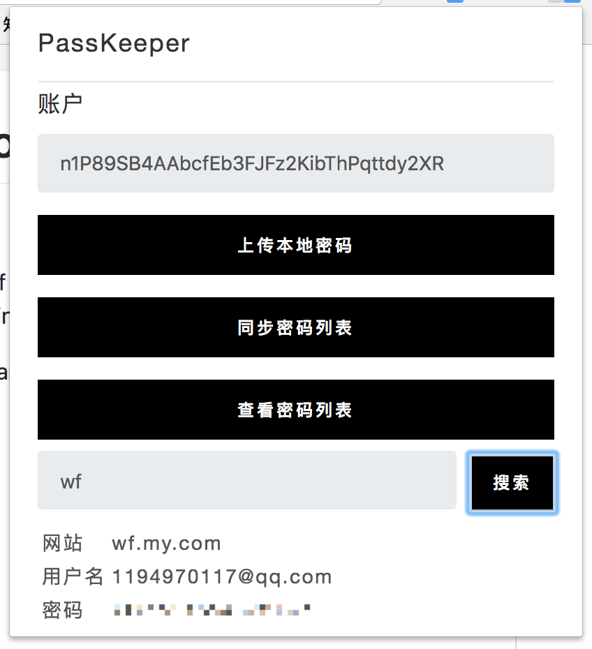 清空搜索框内容，再次点击即可清除上次的搜索结果。 -
查看上传的密码与本地的密码
解锁应用，点击按钮
查看密码列表，打开如图网页。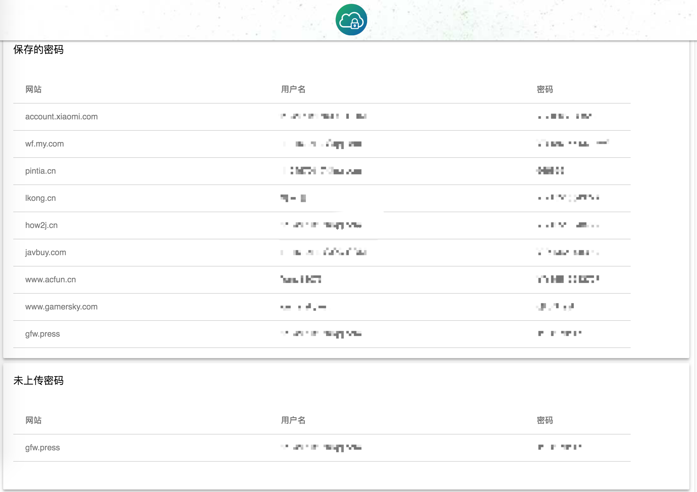 此网页中，保存的密码中的为已上传的密码列表。未上传密码中的为本地保存的密码，等待上传。 -
导入本地密码
目前只完成了macOS Chrome端适配
首先，导出Chrome本地密码，设置->密码和表单->管理密码->导出密码，输入密码后导出为
Chrome 密码.cvs导出后，解锁、点击按钮
查看密码列表, 打开后点击如图按钮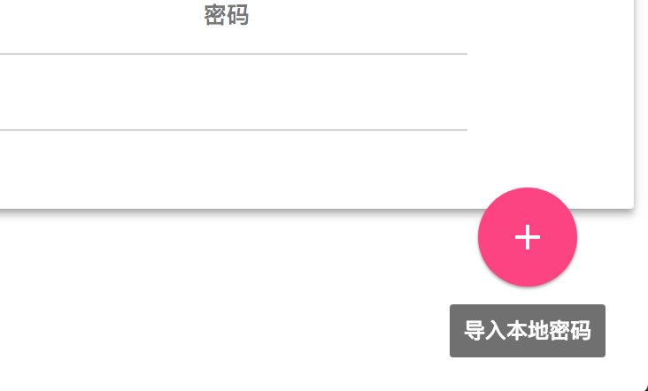选择刚刚导出的cvs文件，即可完成导入。
-
联系作者
解锁应用，点击按钮
查看密码列表，打开网页，点击页面上方导航contact，切换至如图网页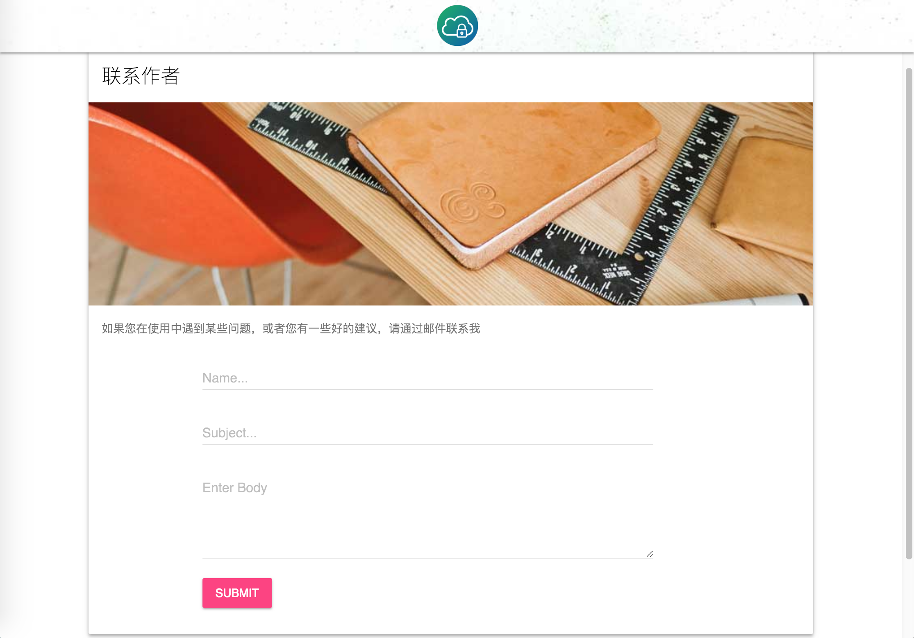分别输入发件人姓名、主题、右键内容，即可进行反馈。 打开应用，在搜索框中键入搜索的关键字，点击
搜索按钮即可完成搜索。鼠标悬停即可查看被省略的部分。
-
-
TODO
本地密码导入7月4日 update- 真-自动填充
- 一网站多密码
- 自动解锁
- 移植智能设备
-
更新计划
- 导入本地密码后增加修改选项
- PassList 分页、样式优化
-
已知BUG
- Notification 显示覆盖问题
- 导入本地密码后不更新BadgeText